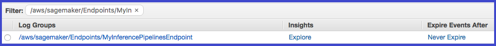
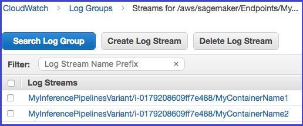

Troubleshoot Inference Pipelines
To troubleshoot inference pipeline issues, use CloudWatch logs and error messages. If you are using custom Docker images in a pipeline that includes Amazon SageMaker built-in algorithms, you might also encounter permissions problems. To grant the required permissions, create an Amazon Elastic Container Registry (Amazon ECR) policy.
Topics
Troubleshoot Amazon ECR Permissions for Inference Pipelines
When you use custom Docker images in a pipeline that includes SageMaker built-in algorithms, you need an Amazon ECR policy. The policy allows your Amazon ECR repository to grant permission for SageMaker to pull the image. The policy must add the following permissions:
{ "Version": "2008-10-17", "Statement": [ { "Sid": "allowSageMakerToPull", "Effect": "Allow", "Principal": { "Service": "sagemaker.amazonaws.com" }, "Action": [ "ecr:GetDownloadUrlForLayer", "ecr:BatchGetImage", "ecr:BatchCheckLayerAvailability" ] } ] }
Use CloudWatch Logs to Troubleshoot SageMaker Inference Pipelines
SageMaker publishes the container logs for endpoints that deploy an inference pipeline to Amazon CloudWatch at the following path for each container.
/aws/sagemaker/Endpoints/{EndpointName}/{Variant}/{InstanceId}/{ContainerHostname}
For example, logs for this endpoint are published to the following log groups and streams:
EndpointName: MyInferencePipelinesEndpoint Variant: MyInferencePipelinesVariant InstanceId: i-0179208609ff7e488 ContainerHostname: MyContainerName1 and MyContainerName2
logGroup: /aws/sagemaker/Endpoints/MyInferencePipelinesEndpoint logStream: MyInferencePipelinesVariant/i-0179208609ff7e488/MyContainerName1 logStream: MyInferencePipelinesVariant/i-0179208609ff7e488/MyContainerName2
A log stream is a sequence of log events that share the same source. Each separate source of logs into CloudWatch makes up a separate log stream. A log group is a group of log streams that share the same retention, monitoring, and access control settings.
To see the log groups and streams
Open the CloudWatch console at https://console.aws.amazon.com/cloudwatch/
. -
In the navigation page, choose Logs.
-
In Log Groups. filter on
MyInferencePipelinesEndpoint: -
To see the log streams, on the CloudWatch Log Groups page, choose
MyInferencePipelinesEndpoint, and then Search Log Group.
For a list of the logs that SageMaker publishes, see Inference Pipeline Logs and Metrics.
Use Error Messages to Troubleshoot Inference Pipelines
The inference pipeline error messages indicate which containers failed.
If an error occurs while SageMaker is invoking an endpoint, the service returns a
ModelError (error code 424), which indicates which container
failed. If the request payload (the response from the previous container) exceeds
the limit of 5 MB, SageMaker provides a detailed error message, such as:
Received response from MyContainerName1 with status code 200. However,
the request payload from MyContainerName1 to MyContainerName2 is 6000000 bytes,
which has exceeded the maximum limit of 5 MB.
If a container fails the ping health check while SageMaker is creating an endpoint, it
returns a ClientError and indicates all of the containers that failed
the ping check in the last health check.